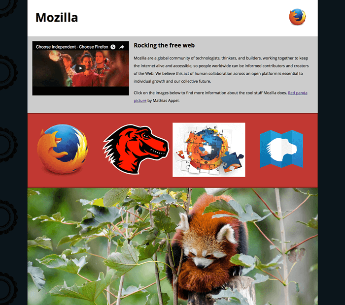
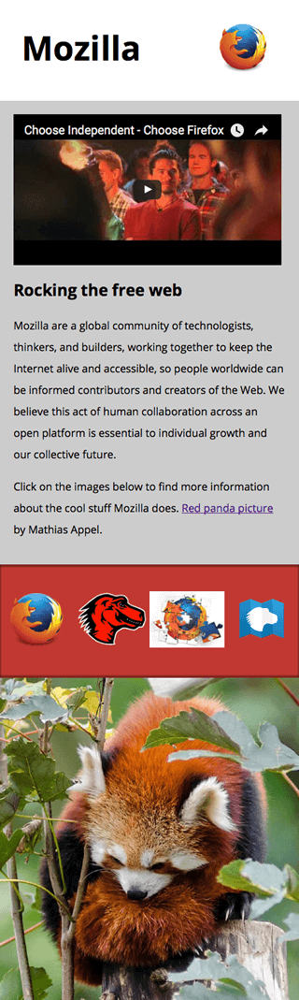

In this assessment, we'll test your knowledge of some of the techniques discussed in this module's articles, getting you to add some images and video to a funky splash page all about Mozilla!
| Prerequisites: | Before attempting this assessment you should have already worked through the rest of the Multimedia and embedding module. |
|---|---|
| Objective: | To test knowledge around embedding images and video in web pages, frames, and HTML responsive image techniques. |
To start off this assessment, you need to grab the HTML and all the images available in the mdn-splash-page-start directory on github. Save the contents of index.html in a file called index.html on your local drive, in a new directory. Then save pattern.png in the same directory (right click on the image to get an option to save it.)
Access the different images in the originals directory and save them in the same way; you'll want to save them in a different directory for now, as you'll need to manipulate (some of) them using a graphics editor before they're ready to be used.
Alternatively, you could use an online tool such as Glitch to create your example. This would also be useful if you want to get it assessed, or ask for help — see the {{anch("Assessment or further help")}} section at the bottom of this page.
Note: The example HTML file contains quite a lot of CSS, to style the page. You don't need to touch the CSS, just the HTML inside the {{htmlelement("body")}} element — as long as you insert the correct markup, the styling will make it look correct.
In this assessment we are presenting you with a mostly-finished Mozilla splash page, which aims to say something nice and interesting about what Mozilla stands for, and provide some links to further resources. Unfortunately, no images or video have been added yet — this is your job! You need to add some media to make the page look nice and make more sense. The following subsections detail what you need to do:
Using your favorite image editor, create 400px wide and 120px wide versions of:
firefox_logo-only_RGB.pngfirefox-addons.jpgmozilla-dinosaur-head.pngCall them something sensible, e.g. firefoxlogo400.png and firefoxlogo120.png.
Along with mdn.svg, these images will be your icons to link to further resources, inside the further-info area. You'll also link to the firefox logo in the site header. Save copies of all these inside the same directory as index.html.
Next, create a 1200px wide landscape version of red-panda.jpg, and a 600px wide portrait version that shows the panda in more of a close up shot. Again, call them something sensible so you can easily identify them. Save a copy of both of these inside the same directory as index.html.
Note: You should optimise your JPG and PNG images to make them as small as possible, while still looking ok. tinypng.com is a great service for doing this easily.
Inside the {{htmlelement("header")}} element, add an {{htmlelement("img")}} element that will embed the small version of the Firefox logo in the header.
Just inside the {{htmlelement("article")}} element (right below the opening tag), embed the YouTube video found at https://www.youtube.com/watch?v=ojcNcvb1olg, using the appropriate YouTube tools to generate the code. The video should be 400px wide.
Inside the {{htmlelement("div")}} with the class of further-info you will find four {{htmlelement("a")}} elements — each one linking to an interesting Mozilla-related page. To complete this section you'll need to insert an {{htmlelement("img")}} element inside each one containing appropriate {{htmlattrxref("src", "img")}}, {{htmlattrxref("alt", "img")}}, {{htmlattrxref("srcset", "img")}} and {{htmlattrxref("sizes", "img")}} attributes.
In each case (except one — which one is inherently responsive?) we want the browser to serve the 120px wide version when the viewport width is 500px wide or less, or the 400px wide version otherwise.
Make sure you match the correct images with the correct links!
Note: To properly test the srcset/sizes examples, you'll need to upload your site to a server (using Github pages is an easy and free solution), then from there you can test whether they are working properly using browser developer tools such as the Firefox Network Monitor.
Inside the {{htmlelement("div")}} with the class of red-panda, we want to insert a {{htmlelement("picture")}} element that serves the small portrait panda image if the viewport is 600px wide or less, and the large landscape image otherwise.
The following screenshots show what the splash page should look like after being correctly marked up, on a wide and narrow screen display.


If you would like your work assessed, or are stuck and want to ask for help:
{{PreviousMenu("Learn/HTML/Multimedia_and_embedding/Responsive_images", "Learn/HTML/Multimedia_and_embedding")}}
{kind=link}